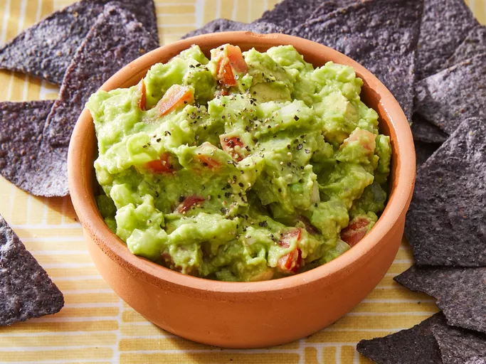

Guacamole

Description:
This is a short recipe for spiced Guacamole, which will go excellently as an addition to the Bean Chilli Wrap recipe also available on this website!
Ingredients:
- Two peeled, pitted avocados
- 1 Chopped small onion
- 1 Chopped tomato
- One clove minced or diced garlic
- Salt & pepper
- Lime juice
Steps:
- Mash avocado into a large bowl.
- Stir in onion, tomato, and garlic.
- Season with lime juice, salt, and pepper.
- If prepared sufficiently in advance, cover and chill for 30 minutes to allow flavors to blend.
Home